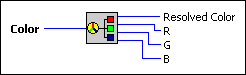

Color to RGB VI
Owning Palette: Picture Functions VIs
Requires: Base Development System
Resolves any color input, including system colors, into its respective red, green, and blue components.
To perform a task such as color arithmetic with symbolic colors, you must convert the colors to their red, green, and blue components.

 Add to the block diagram Add to the block diagram |
 Find on the palette Find on the palette |